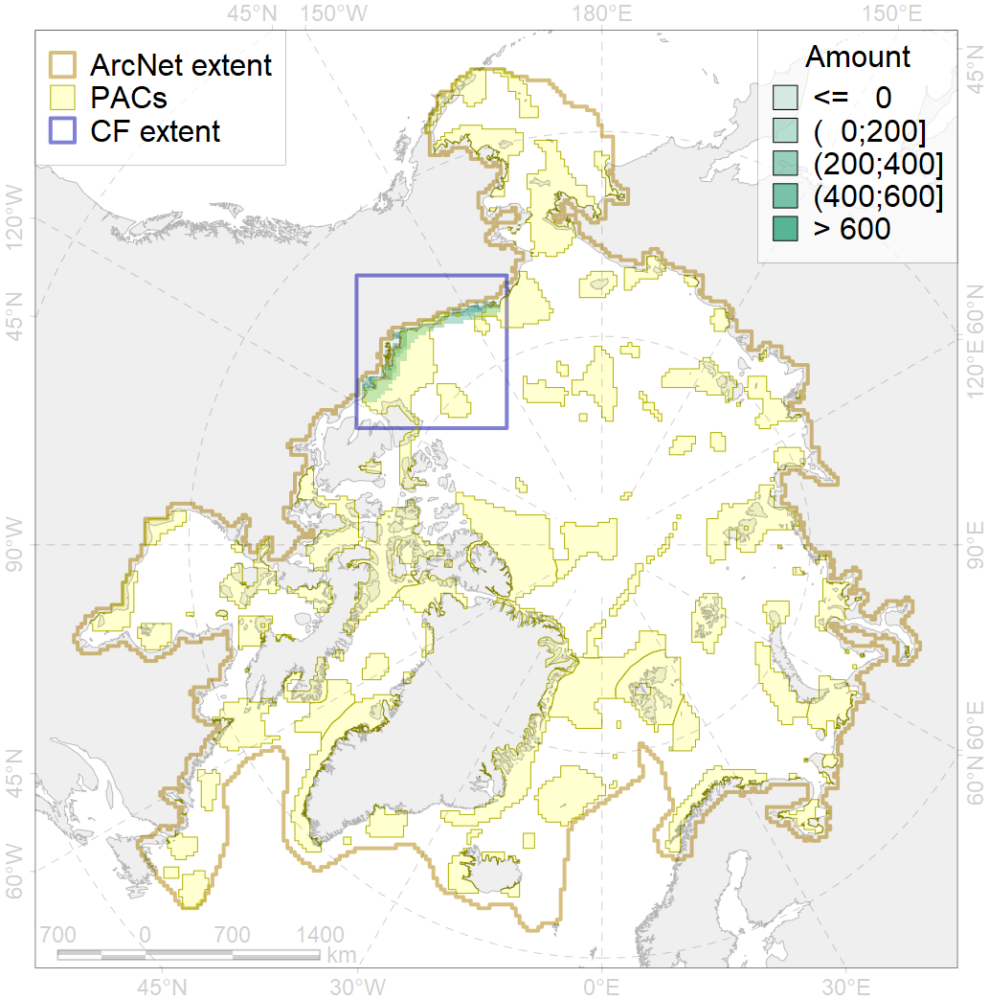
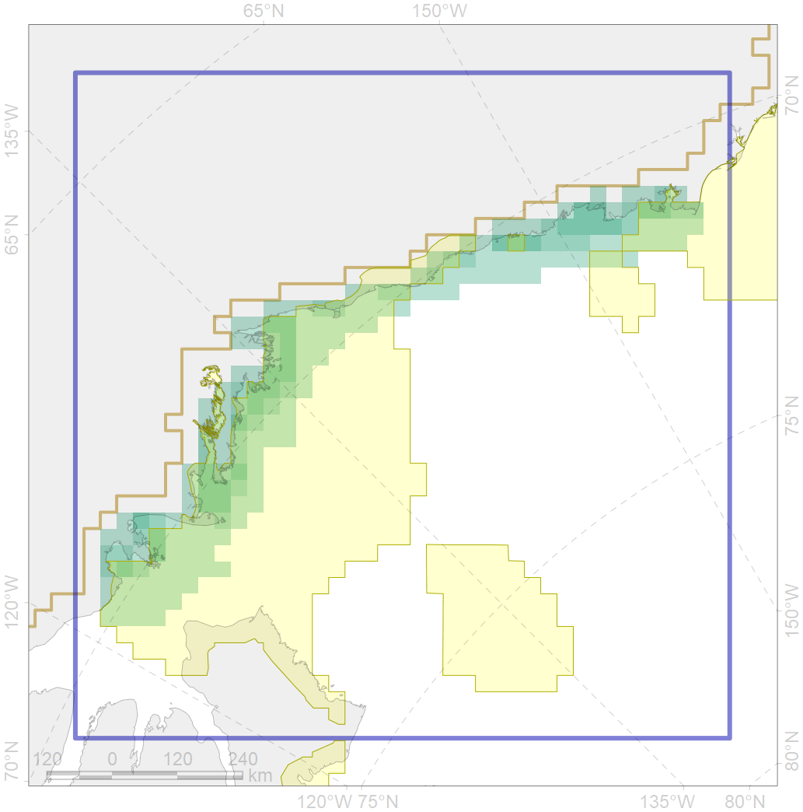

3005

| CF code | 3005 |
| CF name | Fast Ice distribution in the Beaufort Sea region |
| Time Period | 2009 - 2018 |
| Source(s) | Merged ice charts |
| Seasonality | 01 November - 31 July; year of census is for January |
| Depth Horizon | Sea level (0m) |
| Methodology | Processing of ice charts |
| Use Restrictions | Joined terms of data licenses, copyrights, restrictions, terms of use, disclaimers, etc. N…1 |
| Author Name | Nikita Platonov |
| Notes | |
| Scenario’s Target | 0.06 |
| Target Achievement | 0.650 (Scenario: 1083.4%) |
| PAC | Share of the Total Amount within the PAC | Share of the Target Achievement for the ArcNet | PAC’s Contribution to the Target Achievement |
|---|---|---|---|
| 60 | 7.3%8.8% | 92.2%97.8% | 8.5%9.0% |
| 61 | 1.8% | 29.4% | 2.7% |
| 62 | 54.3%58.2% | 845.8%887.2% | 78.1%81.9% |
| inner | 63.3%68.8% | 967.5%1014.5% | 89.3%93.6% |
| outer | 36.7%56.3% | 115.9%414.3% | 10.7%38.2% |
| † supplement values are for area consistence whereas principal values are for Accenter compatible gridded stats |